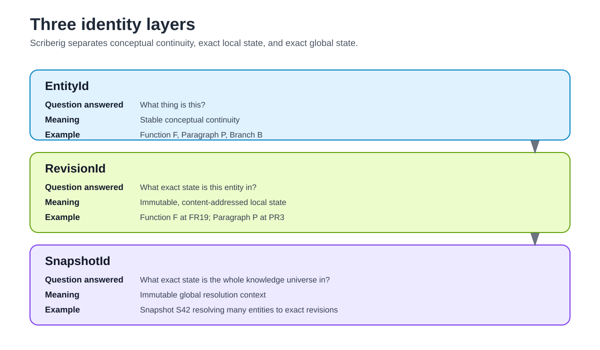
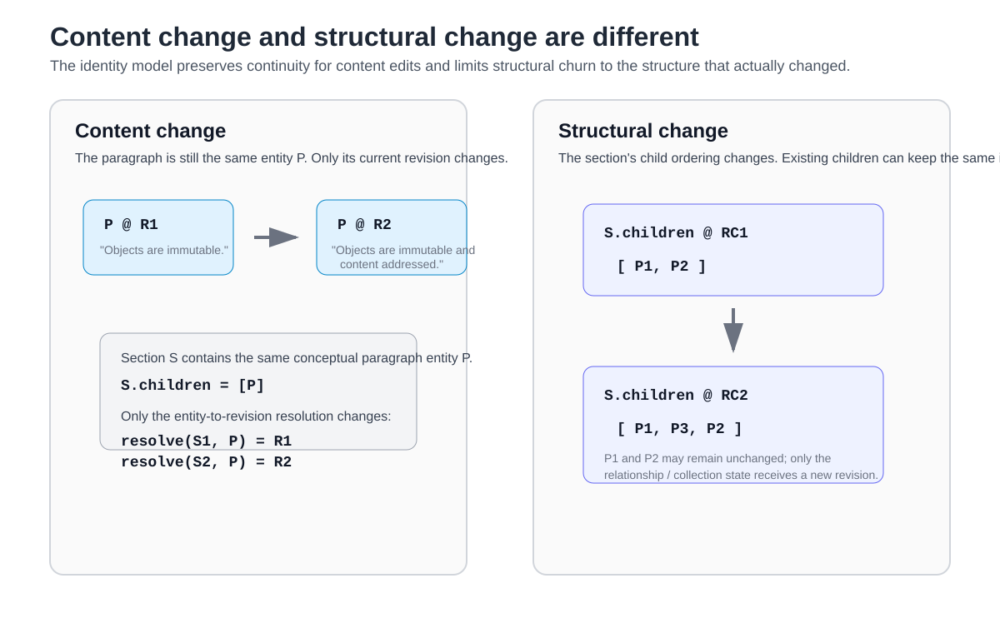
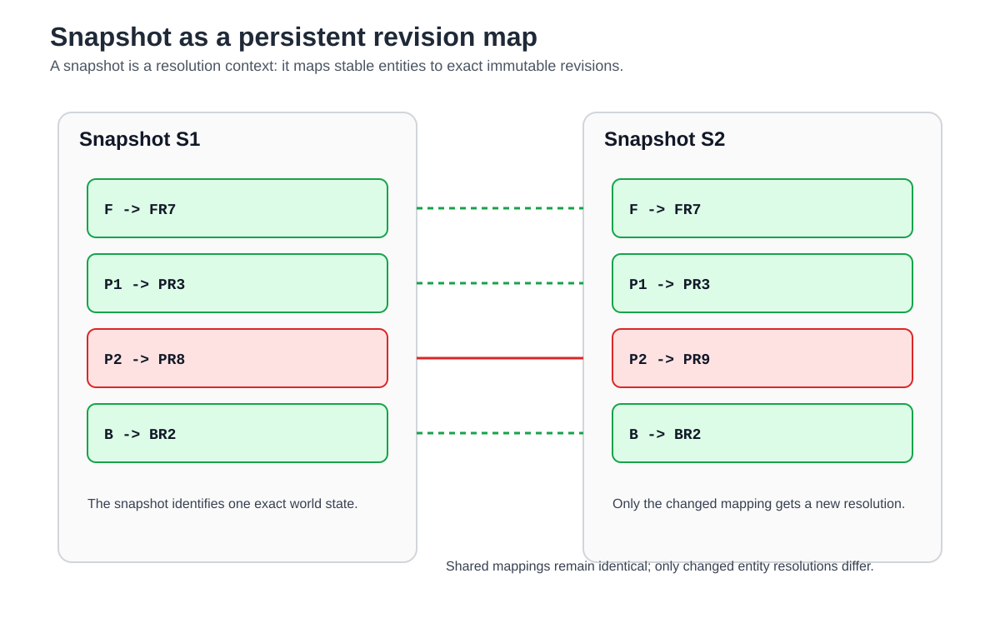
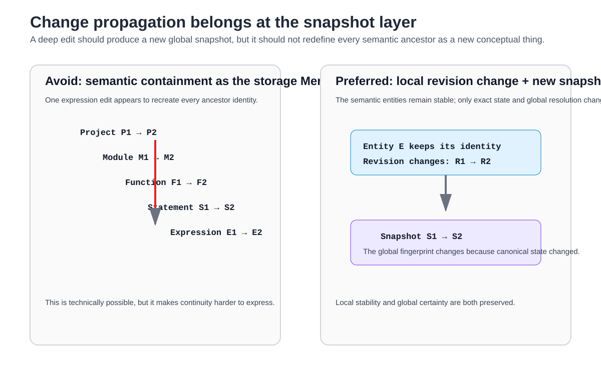
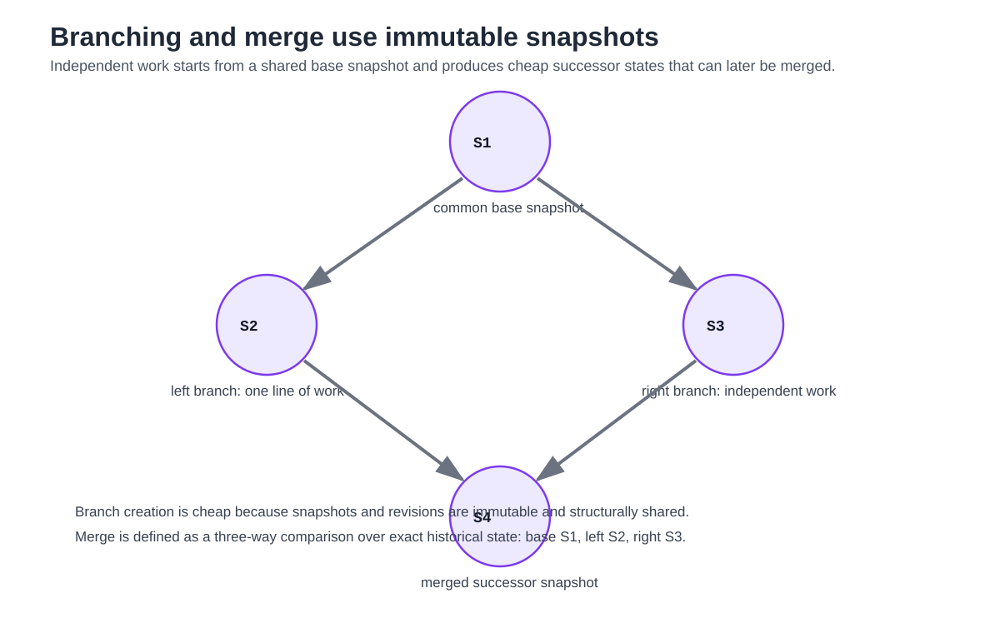

Identity, Revisions, and Snapshots¶
1. Purpose¶
Scriberig must preserve two properties that are easy to confuse:
- local semantic objects need stable identity across ordinary change;
- the system also needs an exact immutable identity for every historical state.
A paragraph should still be the same conceptual paragraph after its text is edited. A function should still be the same conceptual function after an expression changes. A session branch should remain the same branch while work is appended to it.
At the same time, an exact historical reference must never silently resolve to newer content, and the system must be able to identify whether anything in canonical knowledge changed between two points in time.
Scriberig therefore distinguishes three identities:
They answer different questions:
EntityId -> What thing is this?
RevisionId -> What exact state is this thing in?
SnapshotId -> What exact state is the whole knowledge universe in?
These identities must remain distinct throughout storage, query, projection, caching, sessions, agents, and external APIs.
This document defines their meaning and the architectural rules that follow from them. Concrete hash algorithms, Rust types, database layouts, and persistent-map implementations belong in lower-level designs.
2. Core Rule¶
The central rule is:
Stable semantic identity is local. Exact immutable state is revisioned. Global certainty is provided by snapshots.
A change to one object should not unnecessarily redefine every semantic object that contains or refers to it.
However, every canonical change must produce a new global snapshot identity.
Scriberig deliberately keeps both properties:
This is not a compromise between two models. It is a separation of concerns.
The next figure is the anchor for the whole document. The key thing to notice is that each identifier exists for a different job: entity identity preserves continuity, revision identity preserves exact local state, and snapshot identity preserves exact global state. The rest of the document keeps these concerns separate.

Figure 1. The three identity layers: conceptual continuity, exact local state, and exact global state.
3. Entity Identity¶
An entity represents conceptual continuity.
Examples include:
- a document;
- a section;
- a paragraph;
- a table row;
- a source-code module;
- a function;
- a statement;
- a session;
- a branch;
- a decision;
- a style;
- a PDF page.
An EntityId answers:
Which conceptual thing are we talking about?
For example:
may have many historical states:
The entity remains the stable handle when continuity matters.
Changing the body of the function does not automatically create a new conceptual function.
The same principle applies to documents and sessions.
Editing the text of a paragraph should normally create a new revision of the same paragraph entity. Adding work to a session branch should normally create a new revision of the same branch entity.
4. Entity Identity Is Not Content Identity¶
An entity must not be identified solely by a hash of its current content.
If entity identity were equal to content identity, every edit would destroy continuity.
For example:
changed to:
would appear to be an unrelated paragraph rather than a new state of the same conceptual paragraph.
Scriberig needs to represent both facts:
and:
Therefore entity identity and revision identity are separate.
5. Revision Identity¶
A revision represents one exact immutable state of an entity.
A RevisionId answers:
What was this entity exactly in this state?
For example:
Entity P
Revision PR1:
text = "Sessions form a tree."
Revision PR2:
text = "Sessions form a persistent tree."
PR1 and PR2 are different immutable states of the same entity P.
A revision never changes in place.
If canonical state changes, another revision is created.
Historical revisions remain exact while retained by snapshots, branches, history, references, or other roots.
6. Revisions Should Be Content-Addressable¶
Revision identity should normally be derived from the canonical content that defines the revision.
Conceptually:
The exact hashing and canonical serialization rules are implementation details, but the architectural property is important:
The same exact canonical revision should have the same immutable identity.
This enables:
- deduplication;
- deterministic comparison;
- safe cache reuse;
- structural sharing;
- exact dependency tracking;
- reproducible derived analysis.
Content addressing applies naturally to immutable revision state.
It does not replace stable entity identity.
7. What Belongs in a Revision¶
A revision contains the canonical state of one entity for its domain.
Depending on the entity type, this may include:
- scalar properties;
- ordered or unordered relationships;
- collection membership;
- domain-specific structural state;
- canonical comments or annotations;
- references to other semantic entities;
- canonical configuration that is meaningfully part of the entity.
A revision should contain only information that is required to define that entity's canonical state.
Derived indexes, caches, summaries, compiler analysis, render results, and incidental physical storage details should not be included merely because they are convenient to compute alongside the entity.
8. Parentage and Position Are Not Intrinsic Child Identity¶
A child entity should not normally include its parent or its position inside the parent as intrinsic identity.
For example, this is undesirable as a universal rule:
If another paragraph is inserted before P, the paragraph itself has not changed.
If P is moved to another section, its text may still represent the same conceptual paragraph.
Containment and order should therefore normally be represented by the container, collection, or relation that owns those facts.
Conceptually:
rather than:
This allows moves and insertions to affect the structure that actually changed without manufacturing new revisions for otherwise unchanged children.
9. Content Change and Structural Change Are Different¶
Scriberig should distinguish between changing the content of an entity and changing how entities are structurally related.
9.1 Content change¶
Suppose a section contains paragraph P.
The paragraph changes from:
to:
The section may still contain the same conceptual entity P.
Only the current revision of P changed.
9.2 Structural change¶
Suppose a section contains:
and a new paragraph is inserted:
Now the section's membership or ordering changed.
The structure that owns that collection must receive a new revision.
P1 and P2 need not change.
This distinction substantially reduces unnecessary revision churn and gives semantic meaning to changes.
The important contrast in the next figure is that content change preserves the same conceptual entity while structural change creates new relationship or collection state around mostly unchanged children. That is the pattern that prevents unnecessary ancestor churn.

Figure 2. Content change updates an entity revision; structural change updates the relationship or collection that owns ordering or membership.
10. Semantic Containment Must Not Be the Storage Merkle Tree¶
Scriberig knowledge forms a semantic graph.
For example:
It would be possible to define every parent revision as a recursive hash of all descendant revision IDs.
Then editing one expression would force a chain such as:
Persistent data structures make such path copying technically manageable, but this should not be the universal semantic identity rule.
The problem is conceptual rather than merely computational.
Changing an expression does not necessarily mean the function is a different conceptual function. Changing a paragraph does not mean the document is a different conceptual document.
Therefore:
Semantic containment and storage snapshot structure are separate concerns.
The semantic graph expresses meaning.
The snapshot structure provides exact global state.
They must not be forced to be the same tree.
11. Snapshot Identity¶
A snapshot represents one exact consistent state of canonical knowledge.
A SnapshotId answers:
What exact state is the whole visible knowledge universe in?
Conceptually, a snapshot resolves stable entities to immutable revisions:
Snapshot S42
Document D -> Revision DR8
Paragraph P -> Revision PR3
Function F -> Revision FR19
Branch B -> Revision BR5
Decision X -> Revision XR2
A snapshot is therefore not just another semantic parent object.
It is a consistent global resolution context.
The knowledge graph is interpreted relative to a snapshot because an entity by itself identifies continuity, not one exact historical state.
12. Snapshot as Persistent Revision Map¶
The conceptual snapshot model is a persistent mapping:
A new canonical change produces another mapping that differs only where required.
For example:
After editing only P2:
Only one entity resolution changed.
The physical implementation should use persistent structural sharing so that creating S2 does not require copying the entire map.
The exact data structure is a lower-level concern.
Architecturally, snapshots must behave as immutable persistent maps with efficient sharing between related states.
The next figure should be read as a resolution table, not as a semantic parent-child tree. The key point is that a snapshot is a world-state map: most bindings are unchanged and structurally shared, while only the bindings whose exact local state changed need new targets.

Figure 3. A snapshot is a persistent map from stable entity identities to exact immutable revisions.
13. Global Snapshot Change Is Intentional¶
Every canonical change must produce a different snapshot identity.
This is a strength.
A snapshot ID becomes a compact fingerprint for the complete visible canonical state.
If:
then the system can treat canonical knowledge as exactly the same state.
If:
then something changed.
A consumer can then ask for the semantic difference between the snapshots rather than assuming every object changed.
This provides a cheap answer to a global question without sacrificing local stability.
14. Snapshot Identity Should Be Content-Derived¶
A snapshot should have an immutable identity derived from its exact mapping and any canonical metadata required to interpret that mapping.
Conceptually:
The physical structure may use a persistent Merkle map, trie, tree, or equivalent mechanism.
The architectural requirements are:
- the same exact snapshot state has the same exact identity;
- changing any canonical entity resolution changes the snapshot identity;
- unchanged portions are structurally shareable;
- two snapshots can be compared without treating all contained entities as changed;
- historical snapshots remain exact.
15. Local Stability and Global Certainty¶
The three identities work together as follows:
EntityId
stable conceptual continuity
RevisionId
exact immutable local state
SnapshotId
exact immutable global state
This gives Scriberig two useful kinds of stability.
15.1 Local stability¶
A consumer can keep referring to:
across ordinary edits, formatting changes, file moves, and unrelated project changes.
15.2 Historical exactness¶
A consumer can refer to:
and know that the target cannot silently change.
15.3 Global exactness¶
A consumer can attach work to:
and know exactly which revision of every visible canonical entity formed the working world.
All three are required.
16. References Must Declare Their Required Exactness¶
Different operations require different kinds of references.
Use an entity reference when the operation is about conceptual continuity.
Examples:
Use a revision reference when exact immutable content matters.
Examples:
Use a snapshot reference when a consistent world view matters.
Examples:
Run analysis against snapshot S42.
Start an agent branch from snapshot S42.
Render the project as it existed at snapshot S42.
A public API should not hide this distinction behind ambiguous identifiers.
17. Entity Resolution Is Snapshot-Scoped¶
An entity reference by itself does not determine one exact state.
To inspect canonical state, the system resolves it within a snapshot:
Consumers may have an implicit current snapshot for convenience, but the underlying operation remains snapshot-scoped.
This rule prevents subtle ambiguity in history, branches, concurrent agent work, and external clients.
For reproducible operations, the snapshot should be explicit.
18. Historical References Must Never Drift¶
A reference to an exact revision or snapshot must always resolve to the same immutable state.
The following must never happen:
means one body today and another body tomorrow.
Likewise:
must never be retargeted to newer knowledge.
Mutable names such as:
may exist as aliases or pointers, but they are not revision or snapshot identities.
The system must make this distinction explicit.
19. Named Roots and Aliases Are Mutable Pointers¶
Users and applications need convenient names for changing state.
Examples include:
Such names may point to different entities, revisions, or snapshots over time depending on their purpose.
They are mutable references, not immutable identities.
Conceptually:
later becomes:
S41 and S42 themselves remain immutable.
This separation allows familiar mutable workflows without weakening historical exactness.
20. Structural Sharing¶
Related snapshots and revisions should reuse unchanged immutable state.
For example:
After changing only P2:
PR1 and PR3 are shared.
The persistent snapshot structure should also reuse unchanged internal storage nodes.
Structural sharing is important because it makes immutable history practical rather than requiring complete copies of the knowledge universe for every change.
The logical model must permit aggressive sharing even if physical storage later uses additional optimizations.
21. Change Propagation Is Moved to the Right Layer¶
A deep semantic edit does cause one unavoidable global change:
That propagation is intentional.
It means the system has a single exact answer to:
Has any canonical knowledge changed?
What should be avoided is unnecessary semantic propagation such as:
Expression changed
therefore Function entity changed
therefore Module entity changed
therefore Project entity changed
The correct model is:
local entity revision changes where canonical local state changed
+
structural revisions change where relationships or membership changed
+
new global snapshot
This gives precise local invalidation and exact global change detection at the same time.
The next figure contrasts the anti-pattern with the intended design. Readers should notice that the system still gets a single global change signal, but that signal comes from the snapshot layer rather than from redefining every semantic ancestor as a new conceptual object.

Figure 4. Change propagation is intentionally global at the snapshot layer, not at every semantic ancestor.
22. Caches Must Depend on the Smallest Exact Inputs¶
The global snapshot identity must not be used indiscriminately as a cache key.
Doing so would make every global change invalidate every local cached result.
Instead, cache keys should use the smallest immutable inputs that actually determine the result.
Examples:
function summary
depends on Function revision
paragraph rendering
depends on Paragraph revision + Style revision + renderer version
symbol analysis
depends on relevant code revisions + toolchain configuration
branch summary
depends on Branch revision + summary profile
The snapshot ID is appropriate for results that truly depend on the entire snapshot.
This distinction is essential for incremental performance.
23. Dependency Sets Preserve Cache Validity Across Snapshot Changes¶
A derived result may depend on multiple exact inputs.
For example:
An unrelated function may change, producing a new global snapshot.
Analysis A remains valid if all of its declared immutable dependencies remain unchanged.
Therefore:
A new snapshot does not imply that all derived knowledge is stale.
Derived results should record exact dependency revisions and configuration so that validity can be determined precisely.
This rule applies to compiler analysis, render caches, summaries, descriptions, model-generated understanding, query caches, and other derived artifacts.
24. Relationships May Have Their Own Revisioned State¶
Not all canonical state belongs naturally inside a leaf entity.
Some state describes relationships or collections between entities.
Examples include:
- ordered children of a section;
- parameters of a function;
- rows of a table;
- branches belonging to a session;
- file layout of a projected module;
- membership in a conceptual group.
Such structure may be represented as revisioned state owned by a container or by a first-class collection or relation entity.
The exact representation is domain-dependent.
The important rule is:
A child does not need a new revision merely because a relation around it changed.
This enables moves, reorderings, and regroupings without unnecessary content churn.
25. Graph Cycles Must Not Break Revision Identity¶
The semantic knowledge graph may contain cycles.
Examples include:
or mutually recursive definitions.
Revision identity therefore cannot depend on naively recursively hashing the entire reachable semantic graph.
Canonical revision identity must be defined over a bounded canonical representation whose references can be encoded without requiring infinite recursive expansion.
Domains with cyclic canonical structures may require component-level canonicalization or other explicit rules.
The universal model must permit cycles without forcing the whole graph into one recursive content hash.
26. Derived Relations Do Not Automatically Affect Canonical Revision Identity¶
Some relationships are derived rather than canonical.
Examples include:
- symbol resolution;
- inferred type;
- call graph edges discovered by analysis;
- reverse-reference indexes;
- control-flow edges;
- semantic search indexes;
- model-generated descriptions.
Changes in a derived representation must not automatically produce new canonical entity revisions.
Derived information should identify the exact canonical revisions and configuration from which it was computed.
This prevents rebuildable analysis state from contaminating semantic identity.
27. Styles Follow the Same Immutable-State Principle¶
Styles and projection configurations may also have stable conceptual identity and immutable revisions.
For example:
Style entity: preferred-rust-style
Revision SR1:
width = 100
indent = 4
Revision SR2:
width = 120
indent = 4
A mutable alias may identify the currently preferred style while old style revisions remain exact.
Rendering can then depend on immutable inputs such as:
Formatting preference changes do not need to change underlying semantic revisions.
28. Sessions Use the Same Identity Model¶
Sessions are not exceptions to the identity rules.
A session is a semantic entity.
A branch is a semantic entity.
Turns, decisions, tool invocations, results, and summaries may also be entities where useful.
Appending work to a branch creates a new branch revision.
The branch entity remains stable.
A completed branch summary can refer to the exact branch revision it summarizes.
An agent invocation can record the exact snapshot from which it began.
This makes sessions reproducible and allows later agents to distinguish:
from:
29. Agent Work Must Be Snapshot-Based¶
An agent should begin meaningful work from a known snapshot.
Conceptually:
The agent may produce one or more candidate successor snapshots on an isolated branch or workspace.
If canonical state advances independently, the system can compare the agent's base snapshot with the new current snapshot and perform an explicit merge or reconciliation.
The system must not silently reinterpret the agent's earlier observations against newer state.
This is the foundation for safe concurrent agent work.
30. External Editing Uses the Same Model¶
A projected file also corresponds to a known snapshot and exact rendered inputs.
When a user edits the file externally, the system can distinguish:
B = snapshot/projection state from which the file was rendered
D = current database snapshot
F = externally edited projection
Reconciliation can then infer a migration from known state rather than treating the file as an unrelated replacement.
When imported changes are accepted, they produce new revisions and a new snapshot.
The immutable base snapshot remains available for three-way comparison.
31. Snapshot Diffs Are Semantic Change Discovery¶
Because snapshot identities answer only whether global state differs, the system also needs a way to discover what differs.
Conceptually:
should identify changed entity resolutions and relevant structural changes.
For example:
Higher-level domain diffing may then explain the meaning of those revision differences.
Snapshot comparison must not assume that every entity in a different snapshot changed.
32. Branching Does Not Copy the World¶
A branch begins from an immutable snapshot and later points to successor snapshots.
Conceptually:
The branches share all unchanged revisions and persistent snapshot structure.
Creating a branch should therefore be cheap regardless of project size.
The branch records history and intent around snapshot transitions; it does not require cloning all semantic objects.
This property is important for agent experiments, alternative edits, validation workspaces, and concurrent users.
33. Merge Is Defined Over Shared Historical State¶
When two branches descend from a common snapshot:
Scriberig has the information required for semantic three-way comparison:
Disjoint entity changes can often be combined automatically.
Changes to the same entity or structural relation may require domain-aware reconciliation.
A successful merge produces another immutable snapshot:
The exact migration and merge model is defined separately, but immutable snapshot ancestry is a prerequisite.
The next figure gives the mental model for branching and merge. Readers should notice that branches do not copy the whole world; they reuse a shared base snapshot and only add the exact successor states needed for each line of work.

Figure 5. Branching and merge over immutable snapshots with structural sharing.
34. Snapshot Scope May Be Defined by a Root Set¶
Not every Scriberig installation must necessarily place every stored object into one monolithic visible world.
A snapshot may describe the complete state of a defined root set or knowledge scope.
Examples might include:
- one project;
- one workspace;
- one repository plus its active sessions;
- one explicitly composed knowledge universe.
The scope rules must be deterministic and explicit.
Within that scope, the snapshot identity must represent the complete canonical state.
This allows the same storage system to host multiple independent or partially related knowledge worlds without forcing unrelated projects to invalidate one another.
35. Snapshots Are Not Necessarily User-Visible Commits¶
Snapshots are fundamental immutable states.
They may be created frequently as canonical changes occur.
A user-facing commit, checkpoint, milestone, or named branch is a higher-level concept that may point to a snapshot and attach metadata such as:
- author;
- message;
- purpose;
- validation status;
- branch name;
- review state.
The storage model should not require every internal snapshot to become a user-visible commit.
This keeps exact state tracking separate from workflow presentation.
36. Provenance Must Reference Exact State Where Required¶
When knowledge is derived, imported, summarized, validated, or produced by an agent, provenance should be able to identify exact revisions and snapshots.
For example:
or:
or:
This prevents provenance from drifting as entities continue to evolve.
37. Retention and Reachability¶
Immutable revisions and snapshots can accumulate over time.
Retention policy determines which historical states remain addressable.
Potential retention roots include:
- current named roots;
- active branches;
- saved snapshots;
- published states;
- session history;
- migrations;
- user bookmarks;
- audit requirements.
Unreachable revisions and snapshot structure may eventually be reclaimed according to storage policy.
Garbage collection is a persistence concern, but identity semantics require one important guarantee:
An identity must never be reused to mean different content after collection.
If historical content is no longer retained, the system may report it unavailable. It must not reinterpret the identifier.
38. Identity Across Import and Reconciliation¶
When structured external content is imported, the parser can construct candidate semantic state but cannot always know stable entity continuity by syntax alone.
Reconciliation determines whether a candidate object represents:
- a new revision of an existing entity;
- a newly created entity;
- a moved entity;
- a split or merged structure;
- an ambiguous case requiring intervention.
For example, editing a paragraph should normally result in:
while inserting a genuinely new paragraph should result in:
Stable identity must therefore be preserved by explicit reconciliation logic rather than guessed solely from content hashes.
39. Identity Across Moves¶
Moving an entity should not automatically change its entity identity or content revision.
Examples:
- moving a paragraph between sections;
- moving a function between files where the language permits it;
- moving a session branch into another organizational grouping;
- reordering table rows.
The containing structure or projection layout changes.
The moved entity may remain unchanged.
This distinction is especially important for caching, lineage, and agent references.
40. Identity Across Formatting Changes¶
Formatting changes in a projection should not normally change semantic entity or revision identity.
For example, these may represent the same canonical code structure under different styles:
and:
Likewise, Markdown spacing or table alignment may differ without changing canonical semantic content where the domain defines those differences as presentational.
A change only affects canonical revision identity when the domain's canonical model says meaningful state changed.
Projection configuration and style identity are separate concerns.
41. Identity Is Domain-Aware but the Framework Is Universal¶
The universal system defines the distinction among entity, revision, and snapshot identity.
Domains define what constitutes meaningful canonical change for their entity types.
For example:
- a Markdown domain decides which formatting is semantic;
- a Rust domain decides which syntax distinctions are canonical;
- a PDF domain decides whether extracted layout or original binary structure is canonical;
- a session domain decides which turn metadata belongs in canonical state.
The framework must not hard-code one domain's identity rules for all others.
However, every domain must respect the universal invariants around stable entities, immutable revisions, and exact snapshots.
42. Public Operations Should Expose Identity Deliberately¶
Universal operations should make identity scope visible.
Examples include:
inspect(entity, snapshot)
resolve(entity, snapshot)
inspect_revision(revision)
diff_revisions(a, b)
diff_snapshots(a, b)
history(entity)
Higher-level APIs may provide convenient defaults, but exact forms must remain available.
This is especially important for agents and distributed clients because implicit current state can change between operations.
A sequence of reads that must be consistent should operate against one known snapshot.
43. Concurrency Model¶
Immutability means concurrent writers do not need to overwrite the same stored revision.
Two consumers may start from the same snapshot:
and independently create:
Both histories remain valid.
The conflict is not a low-level race over mutable object contents.
It is an explicit question of whether and how S2 and S3 should be merged or which named root should advance.
Mutable root updates may require transactional or compare-and-swap behavior, but the knowledge states themselves remain immutable.
44. Failure Model¶
Creating revisions and candidate snapshots must not corrupt existing states.
If an operation fails during parsing, validation, reconciliation, rendering, or persistence, previously valid revisions and snapshots remain unchanged.
Promotion of a new named current root should happen only after the successor snapshot is complete enough to satisfy the relevant transaction boundary.
This allows failed agent attempts, imports, and edits to remain isolated.
45. Required Invariants¶
All lower-level designs must preserve the following invariants.
- An
EntityIdidentifies conceptual continuity, not exact content. - A
RevisionIdidentifies one exact immutable canonical state. - A
SnapshotIdidentifies one exact immutable global state within its defined scope. - Revisions never change in place.
- Snapshots never change in place.
- Mutable aliases and named roots are not immutable identities.
- Historical revision and snapshot references never drift.
- A local content change does not automatically create new identities for all semantic ancestors.
- Structural changes affect the structure that owns the changed relationship or collection.
- Semantic containment is not required to be the physical snapshot Merkle structure.
- Every canonical change produces a new snapshot identity.
- Unchanged revisions are reusable across snapshots.
- Related snapshots structurally share unchanged storage state.
- Cache validity is based on exact dependencies, not merely on whether the global snapshot changed.
- Derived knowledge does not redefine canonical identity unless explicitly promoted into canonical state.
- Graph cycles must be supported without recursively hashing the entire reachable graph.
- External import and reconciliation preserve existing entity identity when continuity can be established.
- Moving or reformatting an entity does not automatically change its semantic revision.
- Concurrent work creates independent immutable successor states rather than mutating shared history.
- Collected identities are never reused for different content.
46. Consequences for the Rest of the Architecture¶
This identity model determines several later designs.
Persistence¶
The storage layer must support immutable revision objects and persistent snapshot mappings with structural sharing.
Migrations¶
Changes are transitions between snapshots and can record lineage between revisions and entities.
Projections¶
Rendered files and views must record the snapshot and exact semantic or style inputs from which they were produced.
Caching¶
Caches should use revision identities and exact dependency sets rather than filenames, line numbers, or global snapshot IDs unless the result genuinely depends on the whole snapshot.
Sessions¶
Branches and turns can reference exact project snapshots while maintaining stable semantic handles for evolving session objects.
Agents¶
Agent work begins from a known snapshot, uses stable entity handles for navigation, and exact revision references for reproducible observations.
APIs¶
Protocols must distinguish stable entity references from exact revision and snapshot references instead of exposing one ambiguous generic ID.
47. Summary¶
Scriberig uses three layers of identity because no single identity can correctly represent continuity, immutable local state, and immutable global state at the same time.
EntityId
-> stable semantic thing
RevisionId
-> exact immutable state of that thing
SnapshotId
-> exact immutable state of the knowledge universe
The architecture intentionally avoids tying semantic parent identity to recursively hashed descendant state.
Instead, local entities remain stable, changed entities receive new immutable revisions, structural owners receive new revisions when their relationships change, and every canonical transition produces a new persistent snapshot.
This moves change propagation to the layer where it is useful.
Local identities remain stable enough for agents, applications, caching, and semantic references.
The global snapshot still changes whenever anything canonical changes, providing a compact, exact fingerprint for consistency, history, branching, synchronization, and reproducibility.
The result is the combination Scriberig needs:
Local stability for useful semantic identity, immutable revisions for exactness, and global snapshot identity for certainty.